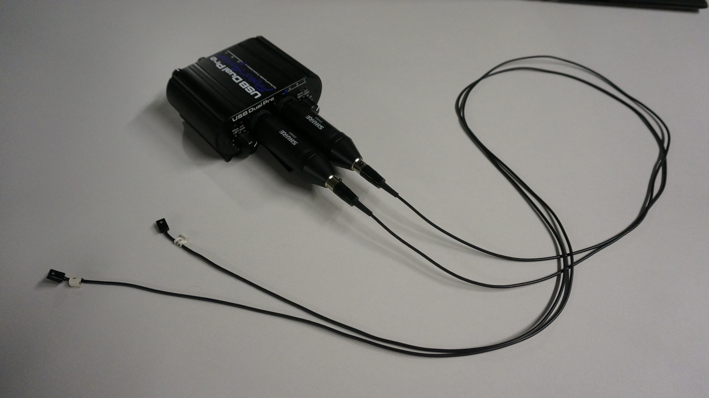
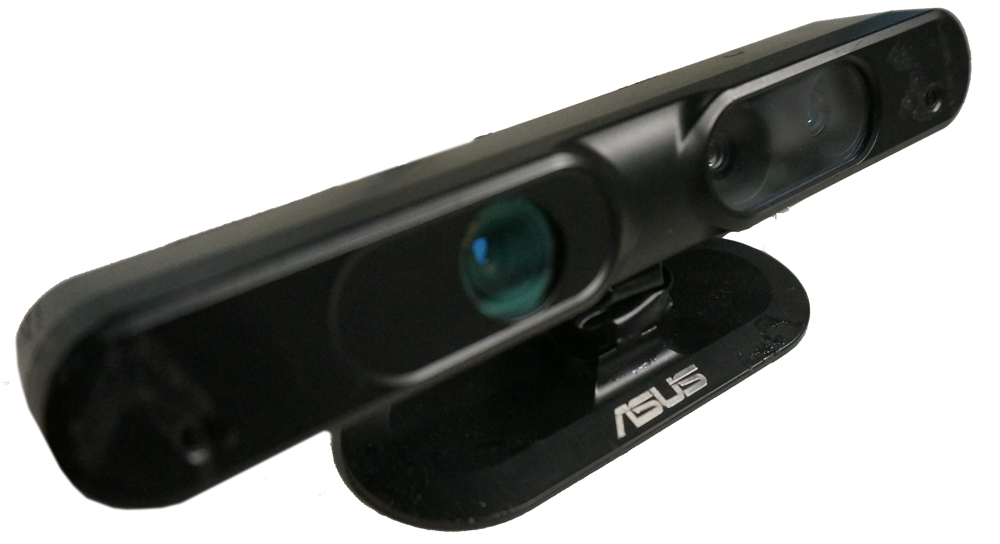
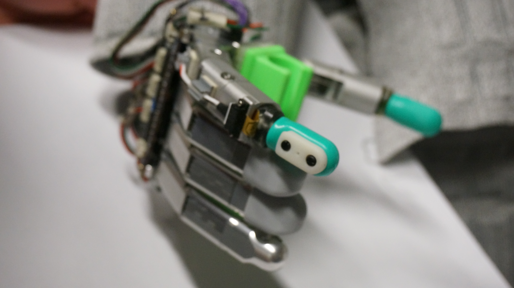

External Sensors
Originally the HUBO robot did not have sensors capable of effectively interacting with the world around it. With the development of MAESTOR I was able to start integrating off the shelf sensors onto HUBO which makes it possible for HUBO to have more knowledge about the world around it. The sensors that we decided to integrate were high quality microphones, an RGB-Depth camera, and high resolution tactile sensors. These sensors correspond to human senses such as hearing, sight, and the sense of touch.
Microphones
The original microphone that HUBO had was a single mono microphone that was not very sensitive. Because of this HUBO couldn't do very much audio processing. With the new stereo microphones that HUBO has, we are able to have HUBO listen more like a person does. HUBO can use its new microphones to do things such as automatic drum calibration, drum mimicking, audio fingerprinting and dancing, and sound localization. These are only a few examples of the things that HUBO can do with his new sense of hearing and the list continues to grow every day.
RGB-Depth Sensor
Out of the box HUBO also did not have very much vision. HUBO had a single, very low resolution web cam mounted at the top of his head. We've 3d printed a head for HUBO that holds an Asus Xtion Pro RGB-Depth camera which give HUBO a 3d view of the world in front of it. The Asus Xtion Pro is very similar to a kinect camera and has the ability to get depth data about objects in front of it. With the depth data we are able to do a few things such as facial tracking courtesy of the COB people tracker, and very recently gesture classification thanks to some machine learning research I am pursuing.
BioTacs
Lastly, out of the box HUBO did not have any sense of touch. HUBO only had four force torque sensors, two in the wrists, and two in the feet to give any force feedback. These sensors were not very helpful for doing task that require dexterity like picking up objects. Because of this we decided to equip HUBO with very high resolution tactile sensors called BioTacs capable of sensing pressure, vibration, and temperature. Unfortunately, due to the design of the fingers and their unreliability I have not had the opportunity to extensively try grasping things with the new fingers. I have however worked to create software that allowed them to be used on HUBO so that other researchers that have HUBO will be able to use them as well.